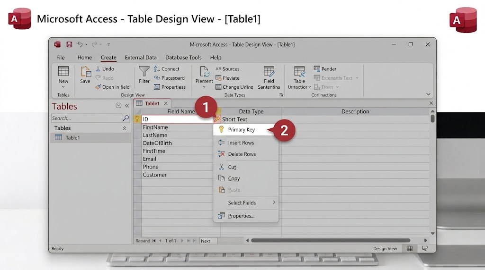

لنفترض أن لديك كتابين يحملان العنوان نفسه "الأمير"، لكن لمؤلفين مختلفين؛ كيف يستطيع Access التفريق بينهما بدقة؟ الحل هو المفتاح الأساسي، وهو عمود خاص يحتوي رقمًا فريدًا لكل صف، لا يتكرر أبدًا، حتى لو تشابهت بقية البيانات.

- افتح جدول "Books" بعرض Design View.
- أضف حقلًا جديدًا في أول السطر باسم "رقم الكتاب"، ونوع بياناته AutoNumber (رقم تلقائي).
- اضغط بزر الفأرة الأيمن على هذا الحقل، واختر "Primary Key" من القائمة؛ ستظهر أيقونة مفتاح صغيرة بجانب اسمه.
- احفظ الجدول؛ ومن الآن، يحصل كل صف جديد على رقم فريد تلقائيًا دون الحاجة لكتابته يدويًا.
هل تعلم؟
يجعل نوع البيانات AutoNumber Access يولّد الرقم تلقائيًا (1، 2، 3...) دون تدخّل منك، وهو الخيار الأكثر شيوعًا للمفتاح الأساسي.
جرّب بنفسك
حاول حذف رقم المفتاح الأساسي لأحد الصفوف أو تكراره يدويًا، ولاحظ ردّ فعل Access.
الحل المتوقع
يرفض Access العملية ويعرض رسالة خطأ، لأنه لا يسمح بتكرار قيمة المفتاح الأساسي أو حذفها؛ وهذا بالضبط ما يضمن تفرّد كل صف.